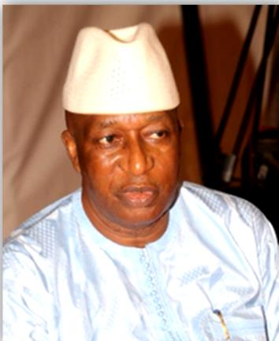
Amb. Soulay Basirou Daramy
Chairman
EON-SL Leadership
Meet the Strategic Advisory Team, National Staff, Regional Coordinators and District Coordinators supporting the Elections Observer Network Sierra Leone in its work to promote transparent, inclusive, peaceful and credible electoral processes.
Strategic Advisory Team
The Strategic Advisory Team provides strategic guidance, institutional advice and high-level support to the work of EON-SL.

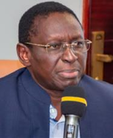


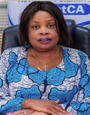
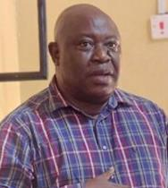
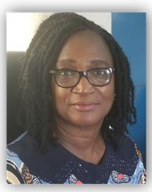
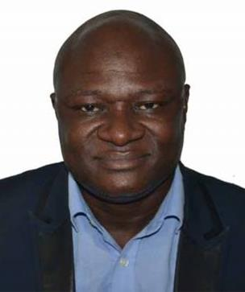
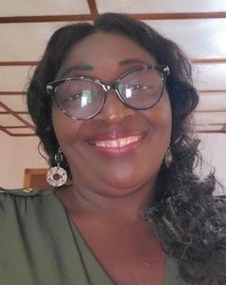
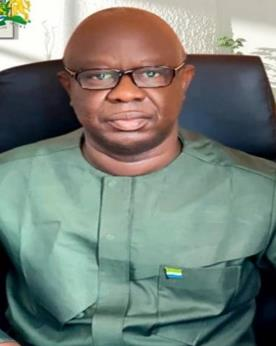
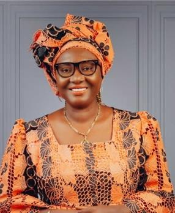
National Secretariat
EON-SL's National Staff provides leadership, coordination, technical and operational support across the organisation's programmes and electoral observation activities.
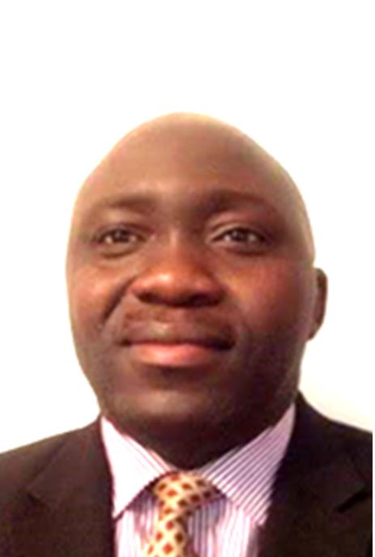
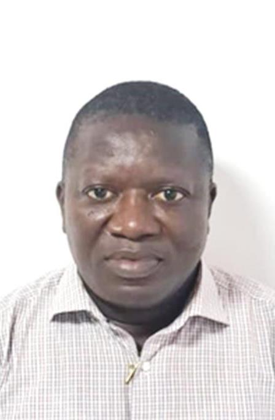
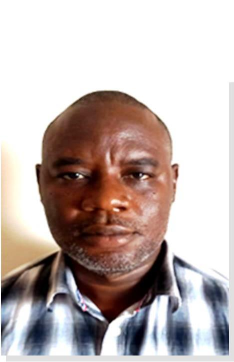


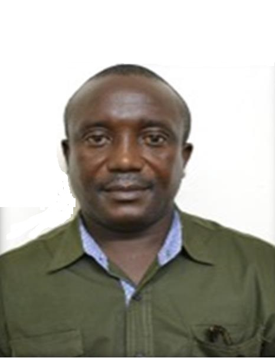


Field Coordination
Regional Coordinators support EON-SL's programmes, electoral observation activities, civic engagement and district-level coordination across Sierra Leone.


District-Level Coordination
District Coordinators support EON-SL's local-level coordination, civic engagement and electoral observation activities across the districts of Sierra Leone.


EON-SL continues to work with citizens, civil society, electoral stakeholders and communities to strengthen transparent, inclusive and credible electoral processes.